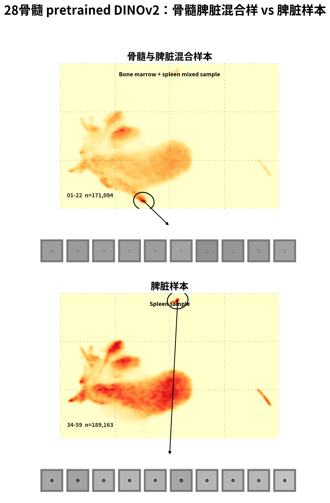

28骨髓/脾脏样本 UMAP 分布复现（非统一颜色尺度）
这个页面故意不统一上下两张图的颜色尺度：上方 01-22 和下方 34-59 各自把自己的最高密度区域显示成最红。灰色细胞块仍然来自黑圈标出的局部区域。
这张图怎么看
这张图和统一尺度版本使用同一套 DINOv2 UMAP 坐标，也同样按文件夹把细胞分成 01-22 骨髓与脾脏混合样本、34-59 脾脏样本。不同点在颜色：这里每张小图都用自己的“温度计”。也就是说，上图会把上图里最集中的地方涂成最红，下图也会把下图里最集中的地方涂成最红。所以这个版本更适合看每个样本内部哪里最集中、形状长什么样；但不适合直接比较上下两张图谁更密，因为两张图的红色不是同一个绝对标准。黑圈圈出的是当前图里的一个局部高密度区域，下面那排灰色细胞图就是从这个黑圈里的细胞候选点中抽出来的。
28骨髓 adapted DINOv2 e5：骨髓脾脏混合样 vs 脾脏样本

28骨髓 pretrained DINOv2：骨髓脾脏混合样 vs 脾脏样本
